平行相似
如图1中的(1)，$AB∥CD$，则$△ABO∽△DCO$(“8”形)
如图1中的(2)，$AB∥CD$，则$△OAB∽△OCD$(“A”形)
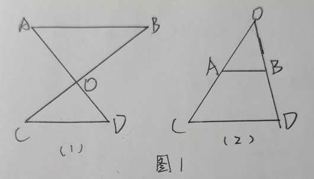
非平行的相似情况
如图2中的(1), $∠A$为公共角，可证明另一角相等或夹边分别成比例即可相似(斜”A”形)
如图2中的(2), $∠A$为公共角，可证明另一角相等或夹边分别成比例即可相似(斜”A”形)
如图2中的(3), $∠AOB$与$∠COD$为对顶角，可证明另一角相等或夹边分别成比例即可相似(斜”8”形)
如图2中的(4), $∠BAC$与$∠DAE$为旋转对应角，可证明另一角相等或夹边分别成比例即可相似(旋转形)
如图2中的(5), $∠A$为公共角，可证明另一角相等或夹边分别成比例即可相似(飞机形)
如图2中的(6), $∠D=∠C$, 则${AB}^2=AD \cdot BC$(飞机形)
如图2中的(7), $∠CAB=∠BAD$, 则${AB}^2=AD \cdot AC$(旋转形)
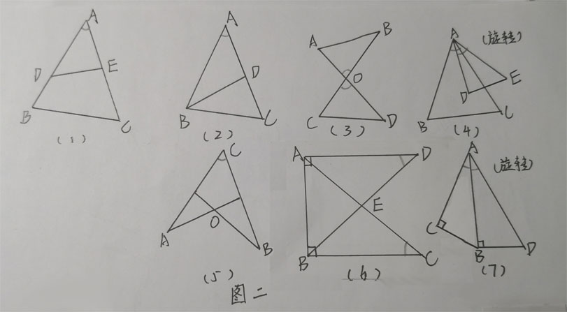
构造平行线
如图3中的(1), $E$是$AC$中点，$B$是$DC$中点，求$\frac{AO}{OB}$
解：过$B$点作$BF∥AC$交$DE$与$F$，然后可得$△FOB∽△EOA$，根据中点相关知识可求证
如图3中的(2), $AE:EC=1:3$，$B$是$DC$中点，求$\frac{AO}{OB}$
解：过$B$点作$BF∥AC$交$DE$与$F$，然后可得$△FOB∽△EOA$，根据中点、比例相关知识可求证
如图3中的(3), $O$是$△ABC$的重心，求$\frac{AO}{OF}$
解：连接$DF$，可得$DF∥AC$，然后可得$△DOF∽△COA$，根据中点相关知识可求证
如图3中的(4), $D,E$是$BC$的三等分点，$F$是$AC$中点，求$BH:HG:GF$(此类问题大多数是某线段等于另两条线段长，然后再探究另两条线段的比例关系)
解：连接$FE$，可得两个中位线(中点+三等分点=两个中位线，可以把三等分点分开看)。然后得到$△ACD∽△FCE，△BHD∽△BGE$，根据相关知识解答即可。
(基本原则，作平行线交酱油线(与已知线段与结论线段无关的一条)，即可解决问题)
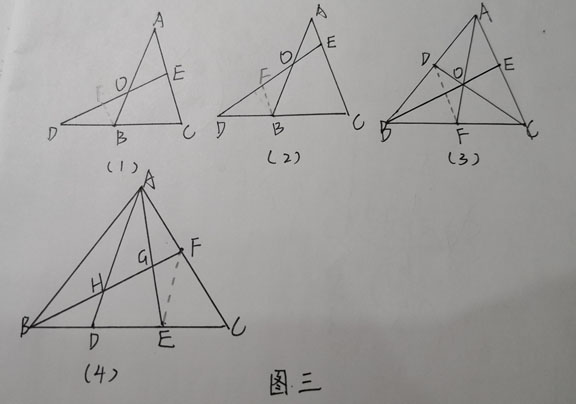
矩形折叠
如图4，$ABCD$是矩形，$BD$为对角线，将$B$对折到$D$，折痕为$EF$
则$BO=OD，EO=FO，BF=ED，BE=DF，EF⊥BD$(四边形$EDFB$为菱形)
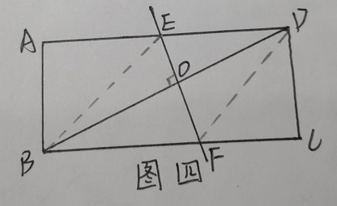
圆与射影定理
如图5中的(1)，$BD$为$⊙O$的直径，$AD⊥BC$，则形成了射影图
如图5中的(1)，$AD,BD$为$⊙O$的切线，交$⊙O$于$A,B$，连接$AB，OD$，则$AB⊥CD$,则形成了两个相同的射影图
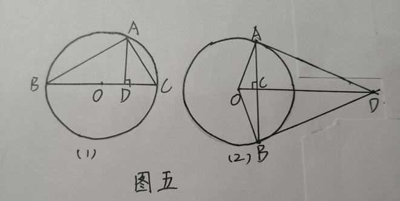
一线三等角
如图6中的(1)，$∠B=∠ACD=∠E$，则$△ABC∽△CDE$(外角知识可证明(基本图形))
如图6中的(2)，$△ABC$为等腰三角形，$∠B=∠EDF$，则$△EBD∽△DCF$(外角知识可证明)
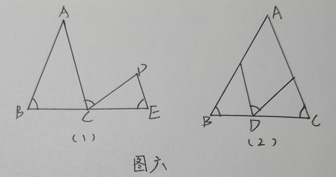
射影定理
如图7中的(2)，$Rt△ABC$中$AD⊥BC$, 则有射影定理：
$AD^2=BD \cdot DC$
$AB^2=BC \cdot BD$
$AC^2=BC \cdot DC$
如图7中的(1)(3)，若$∠BAC=∠BDA$或者$∠B=∠DAC$，则也能构成一部分射影定理图
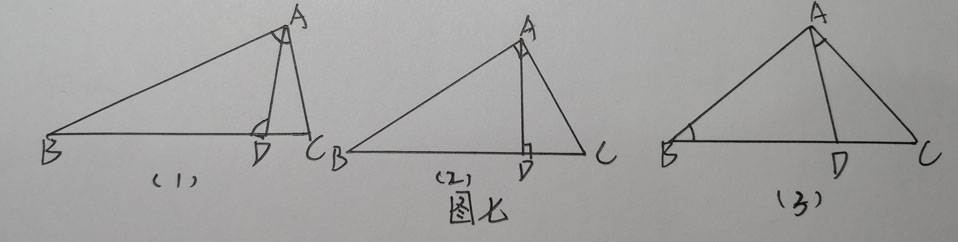
求最大值/最小值
设某边为$x$, 某边为$y$，求$x-y$的最大值
可以联系到求二次函数最大值，因为相似的比例式转化为乘积式可能产生$y=kx^2$
例题：典中点P49 t5
求$XX+XX$最小。
可以联系到轴对称(核心是三角形两边之和大于第三边和两点之间线段最短)，作对称点即可做
圆中的相似问题
在圆中给出直径(半径)长和另一边长，求某一边长。(给出圆中线段求另一线段)
解：一般连接直径所对圆周角，然后算这条连边长，然后相似三角形建立关系求解
例题：典中点P49 t1，典中点P49 t2，典中点P49 t6，典中点P50 t9
圆中边、角的转化
边：
(1)半径转化：设半径为$r$，找等量关系求出$r$。
例题：典中点P50 t11
(2)矩形转化：构造矩形，用矩形对边相等转化边。
技巧：如果原题目中出现了1.垂直、2.垂径、3.切线，则可以考虑作垂直或者垂径。
例题：典中点P50 t8，典中点P50 t11
角：
(1)圆周角：同弧所对圆周角相等。
例题：典中点P49 t3，典中点P50 t10
(2)弦切角等于所夹弧的圆周角
圆中解题技巧
(1)垂径定理：作弦垂线、连弦中点，可构造中点或者垂直
例题：典中点P50 t11
(2)作直径
圆中常见模型
(1)弦切角等于所夹弧的圆周角
(2)相交弦定理
(3)相交弦定理推论
(4)切割线定理
(5)割线定理
相似三角形高的性质
如图8(1)，已知$DE,BC$长以及梯形$BCED$，可以求出$S△BOC，S△DOE$的大小(相似三角形高的比例等于相似比，所以图中$\frac{HO}{OG}=\frac{DE}{BC}$，然后可以通过梯形面积和上底下底求梯形高，即可解决)，也可以求$S△DOB,S△OEC$, 并且这两个三角形面积是相等的(同底等高减$S△DOE$即可证明)
如图8(3)，$D,E$是中点，则
$\frac{S△DOE}{S△BOC}=\frac{1}{4}$
$\frac{S△ADE}{S△ABC}=\frac{1}{4}$
$\frac{S△ADE}{S_{四边形}BDEC}=\frac{1}{3}$
$\frac{S△DOE}{S△ADE}=\frac{1}{3}$($DE$等底，$\frac{AI}{HO}=\frac13$)
如图8(2)，$DE:BC=1:3$，则仍然有以上的规律，只是答案不同
如图8(4)，$EFHG$为矩形，$AD$为$△ABC$的高，则可以利用相似解许多问题(比如$四边形EFHG$如何为正方形/$四边形EFHG$面积最大问题)
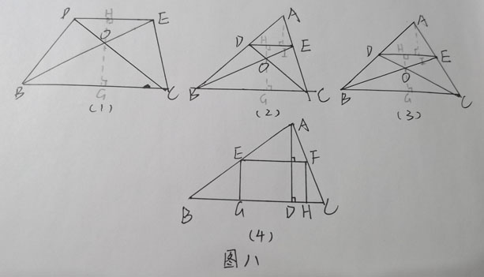
相似三角形与反比例函数
如图9，$y=\frac kx$在第一象限，$Rt△ABO$中，$∠ABO=90°$，则可以得到$S△AOD=S_{梯形CEBA}$(根据反比例函数$k$的几何含义和面积差相关知识可得$S△COF=S_{四边形FEBD}$。)
此问题可以运用相似三角形求面积比/线段比。
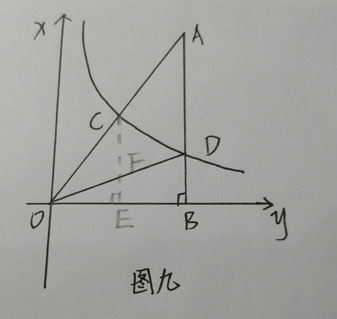
相似三角形解题步骤
明确题目
1、求证比例式相等/乘积式相等
1、直接得出(三点定型，此处可能定出一个不存在线段，但三点不共线，即可以构造三角形)
2、转化线段
3、求中间比、两次相似(乘积式可以等乘积带换(通常是一条边的平方))
4、构造相似三角形
2、求几个比例式的和(分母化为相同，转化线段)
1、通过相似三角形/转化线段使分母化为相同
2、找分子与分母的关系
3、求比例式的值/乘积式的值
1、根据已知值顺藤摸瓜，找相似
三线合一、垂直平分线的性质
连垂直平分线上的线段得到相等(有时是等边/等腰三角形，也能构造)
如图10(1).
例题：典中点P58 t5, 典中点P59 t11, 典中点P59 t12
有垂直/中点/角平分线，则有垂直平分线
例题：典中点P64 t6
有等腰/等边三角形可以作斜边的高，构造高和角平分线
例题：典中点P64 t6
等腰直角三角形底角为$45°$，作斜边的高形成两个等腰直角三角形
例题：典中点P62 t5
角平分线的性质
角平分线+平行线=等腰三角形(构造等腰1)
如图11(1).这个公式还能反过来用，比如已知平行和等腰求角平分线，已知角平分线和等腰求平行等。这也是证明切线的常用定理。
例题：典中点P61 t4
角平分线+角两边上的任意一个垂直(构造相等/全等)
如图11(2).作另一个垂直，则这两条垂线长度相同，且形成两个全等三角形$△APO≌△BPO$
角平分线+平分线上的任意一个垂直(构造等腰2/全等)
如图11(3).作另一个垂直，则这两条垂线长度相同，且形成两个全等三角形$△APO≌△BPO$，且$△AOB$等腰
截取线段(构造全等)
如图11(4).在$OB$上截取$OB=OA$，则形成两个全等三角形$△APO≌△BPO$
双垂直+角平分线=等腰三角形(等腰)
本题无一致的模型，但注意到只要有了两个垂直+角平分线，就能通过倒角得到等腰三角形。
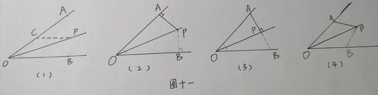
三角函数的代换关系
1、$cosA=sinB, cosB=sinA$
2、$sin^2A+cos^2A=1, sin^2A+sin^2B=1$(构造完全平方式的诀窍)
3、$sinA=cosA \cdot tanA$
4、$tanA \cdot tanB=1$
5、两个直角边关系$tan$
6、一个直角边，一个斜边关系$sin，cos$
三角函数解题方法(求三角函数)
直接求
转角
(1) 在圆中转到直径上
(2) 平行/垂直/等腰转角
(3) 相似转角
补角
基本方法是作垂直。
有6种基本方法，如图13.
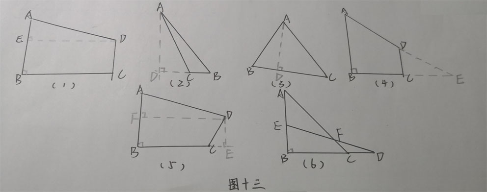
面积
面积法求高
$h=\frac{S_{△}}{a}$
底边比求面积
$S_1:S_2=a_1:a_2$